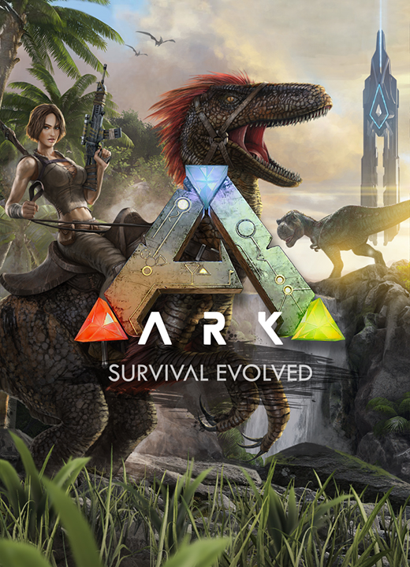
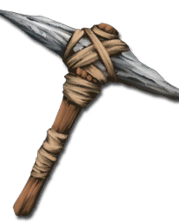
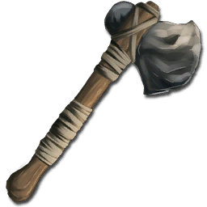
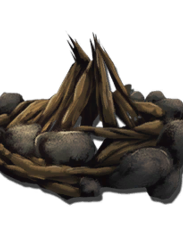
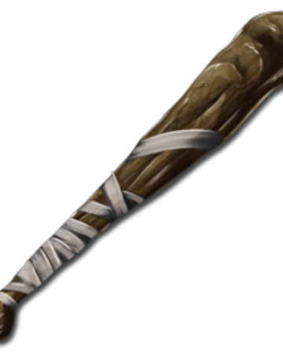
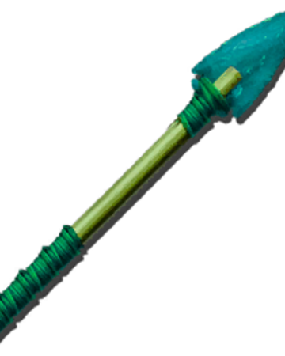
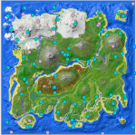

Основная информация
Будучи выброшенным голым на берег таинственного острова под названием ARK, замерзая и умирая с голоду,
вам придется охотиться, собирать ресурсы, создавать предметы, выращивать урожай, исследовать технологии и
строить укрытия, чтобы противостоять погодным условиям. Используйте свою хитрость и ресурсы, чтобы убивать
или приручать и разводить громадных динозавров и других первобытных существ, населяющих остров, и объединяйтесь
с сотней других игроков или охотьтесь на них, чтобы выживать, властвовать... и преодолевать трудности!
Стартовое снаряжение
Для начала выживания вам понадобятся стартовые инструменты: Кирка

,тапор

и костер

.
Приручение динозавров
Существует 2 сопособа приручения: насильственный, пасивный.
Насильственный с помощью ударов руки, дубинки

, а также с помощью наркотических стрел

Для приручения пасивным способом потребуется положить еду в последний слот быстрого доступа и возле существа нажимать E.
Карты
В ARK существует много карт: Ragnarok, Aberration, Scorched Earht, Valguero, The Island, The Center.
Стандартной картой для новичков является The Island.
Динозавры
Тут
вы можете посмотреть всех динозавров и всю информацию про них.
Развитие
Рекомендуется развиватся на заметках первопроходцев. Они дают много опыта и X2. Следовательно так можно за 30 мин получить 100 уровень.
Карта заметок первопроходцев

Список всех функций и особенностей игры, которые уже присутствуют в ней: Приручай, тренируй и езди верхом на динозаврах в огромной живой экосистеме Сразу при старте раннего доступа (дата выхода) в игре ARK: Survival Evolved уже будет присутствовать более 30 динозавров и других существ,
а к финальному релизу будет более 70-ти видов, которые можно приручать. Как только вы найдете и приручите нужное существо, вы сможете командовать им.
Указания будут зависеть от того, как вы приручили существо и насколько оно натренировано. Питомцы, которые питаются и уровень которых повышаем, могут
переносить различного вида грузы, а на крупных существах вы можете ездить верхом и полностью контролировать их движения. Пролетите верхом на птеродактиле
над заснеженными пиками гор, перевозите своих союзников за вражеские стены, пройдите через базу противника на огромном бронтозавре или выслеживайте добычу
на спине тираннозавра! Войдите в живую экосистему с ее иерархией — хищники и добыча, в которой вы — всего одно из множества существ, пытающихся выжить и доминировать на острове.
Голод, жажда, температура и погода Чтобы выжить, вам нужно есть и пить. Каждый вид растений и мяса, включая и человеческое мясо, имеет свои питательные свойства. Вам постоянно нужно иметь в инвентаре воду и обеспечить запасами свой дом, а нахождение источника питьевой воды может стать проблемой. Каждое ваше действие влияет на показатели пищи и воды, поэтому длительные путешествия по миру игры могут быть очень рискованными. Чем выше вес инвентаря, тем медленнее вы двигаетесь, а дневной/ночной цикл и случайные погодные условия добавляют температуру, также влияющую на жажду и голод, создавая тем самым еще один уровень сложности выживания. Разводите огонь и стройте укрытие, мастерите огромное количество разнообразного оружия, инструментов, одежды и брони, которая защитит вас от окружающих вас опасностей и экстремальных температур, работающих на динамической системе расчета теплоизоляции.
Собирай, строй и крась Вырубывая целые участки леса, добывая руду и другие ценные ресурсы, вы можете создавать различные конструкции для создания многоэтажной постройки, которая состоит из целого комплекса связанных между собой частей, таких как платформы, опоры, балки, окна, лестницы, двери, ворота/дистанционные ворота, люки, водопроводные трубы, краны, генераторы, провода и другие электроприборы. На каждую структуру действует система нагрузки, то есть, если поддержки недостаточно, она может разрушится, поэтому важно хорошо укреплять ваши строения. Все постройки, оружие, одежду и броню можно разукрасить, также как и размещенные вами знаки, билборды с текстом и другие декоративные объекты. Укрытие снижает риски, создаваемые погодными условиями, и защищает вас и ваши сбережения.
Сажай, выращивай и пожинай Собирайте семена дикой растительности, садите их на земельные участки, которые вы проделаете, поливайте и удобряйте землю (животные едят и испражняются, что превращается со временем в компост (есть разные виды), который можно использовать как удобрение). Присматривайте за своими насаждениями, они вырастут и вы получите вкусные и уникальные плоды, которые можно приготовить за множеством рецептов и сделать полезные тонизирующие средства. Исследуйте местность, чтобы найти семена редких видов растений, которые имеют самые сильные свойства. Вы можете выживать и овладевать островом Арк ненасильственным способом — рай для вегетарианцев.
Призыв мифических существ Собрав нужное количество редких жертвенных предметов на особых локациях призыва, вы можете обратить внимание одного из богоподобных мифических существ острова Арк, которое примет вызов. Эти гигантские чудовища позволяют самым опытным группам игроков и их армии питомцев закончить последнюю цель игры, и, если они победят в схватке, награда будет достойной.
Система племени Создайте свое племя, приглашайте в него своих друзей и каждый сможет отдавать приказы питомцам племени. Члены племени также смогут возрождаться при смерти на точках респавна племени. Повышайте игроков до хозяев племени, чтобы вам было легче руководить им. Огласите все пароли от дверей и ворот для доступа в деревню.
Элементы РПГ Все предметы игрок должен мастерить по чертежам, каждый имеет переменную статистику и качество, а также требует соответствующие ресурсы для создания. Более далекие и суровые локации острова (пики гор, глубины пещер и океана) имеют лучшие ресурсы. При получении опыта уровень персонажа повышается и вы можете изучить новый энграмм, что даст вам возможность создавать предметы по памяти, не используя чертежей, даже после смерти. Настройте вид своего персонажа так, как вы хотите, изменяя волосы, глаза, цвет кожи и пропорции тела.
Хардкор-механика Все, что вы создаете, имеет свою прочность и со временем изнашивается, если предмет не чинить, а когда вы выходите из игры, ваш персонаж остается в ней и спит в мире. Все ваши вещи существуют физически в мире игры, то есть складываются в ящики или находятся у персонажа, любой игрок может украсть их, поэтому чтобы обезопасить себя, вы должны строить укрепления, объединяться в команды или приручать животных, чтобы те охраняли ваши сбережения. Вас могут вырубить, связать и использовать для различных целей, таких как переливания крови, собирание испражнения (для удобрения) или же вас просто могут скормить питомцу.
Исследуйте и открывайте Таинственный остров Арк со своей поражающей и вселяющей страх окружающей средой состоит из многих природных, не природных, наземных, подземных и подводных структур. По мере изучения острова вы будете находить экзотических процедурно-генерируемых существ и редкие чертежи, а также заметки исследователей, которые динамически обновляются в игре. Они написаны людьми, жившими на этом месте тысячу лет назад, и описывают существ острова Арк и его предысторию. Ваша собственная внутриигровая карта острова может быть отредактирована, вы можете также создать компас или GPS-навигатор для помощи в исследовании вместе с другими игроками, с которыми можно общаться через текст или голосовой чат, если стоите рядом, а для общения на расстоянии есть рация. Вы можете создавать и рисовать знаки для других игроков, чтобы помогать им или заводить их в ловушку. И еще одна вещь, о которой стоит подумать, как вы победите Создателей и Завоевателей острова Арк? В игре запланирована концовка.
Огромный, по-настоящему живой игровой мир и целая вселенная
Ваш персонаж, все, что вы построили, ваши питомцы после выхода из игры будут оставаться на сервере с 100-ей и больше игроков. Вы даже можете путешествовать своим персонажем через сеть мира после достижения Обелисков и загрузки ваших данных из Steam Economy! Каждая часть целой Галактики немного отличается от предыдущей, если вы хотите оставить след и завоевать место, то когда-то во время специальных тематических ивентов ковчеги будут отправляться на карту мира на определенный промежуток времени.
Поддержка Steam Workshop Если вы хотите, то можете играть в одиночную игру и переходить в мультиплеер с одного неофициального сервера на другой вместе со своим персонажем и вещами, также как и обратно. Игра может быть модифицирована, она имеет полную поддержку Steam Workshop и редактора Unreal Engine 4. Вы можете сами создать свой сервер и настроить мир так, как вам хочется.
Современнейшая графика Игра ARK: Survival Evolved создается с использованием лучших и новейших технологий компьютерной графики. С помощью Unreal Engine 4 разработчики воссоздали впечатляющий мир, в котором присутствует полное динамическое и глобальное освещение, погодные эффекты (дождь, снег, туман и т.д.), реалистичные объемные облака, а также последние передовые технологии рендера DirectX11 и DirectX12.
Обзоры на игру ARK: Survival Evolved